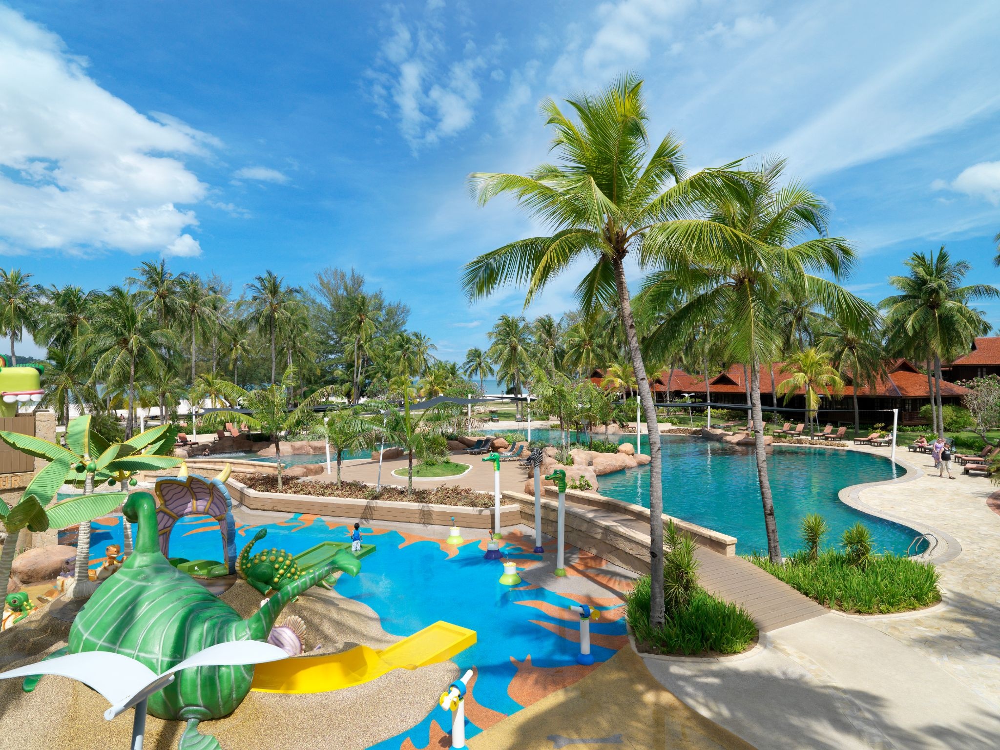
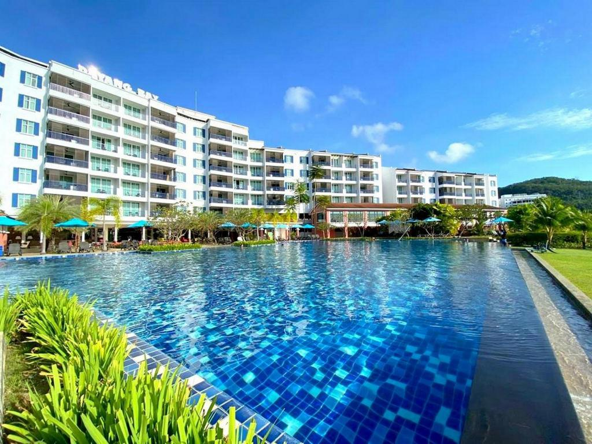

Hi, welcome to the tour package page on Langkawi Island.
Here are the holiday packages we've prepared for you:

3 DAYS 2 NIGHT LANGKAWI PELANGI BEACH RESORT & SPA FREE & EASY PACKAGE
Price From: RM385 - RM1,965
Itinerary:
Day 1
1300 – Upon arrival, proceed to the property
1400 – Register to room - After check-in, you can put your luggage in the room. After that, you can start to review the resort's facilities and the surrounding scenery.
– Free & Easy
Day 2
0700 – Breakfast - Free & Easy
Day 3
0700 – Breakfast - The last day, after breakfast, you can relax until the right time for check-out.
1200 – Check out of the resort

4 DAYS 3 NIGHT LANGKAWI DAYANG BAY RESORT PACKAGE FREE & EASY
Price From: RM320 - RM1,970
Itinerary:
Day 1
1200 – On arrival, continue onto Dayang Bay Resort
1400 – Register to room - After check-in, you can put your luggage in the room. After that, you can start to review the resort's facilities and the surrounding scenery.
– Free & Easy
Day 2
0700 – Breakfast - Free & Easy
Day 3
0700 – Breakfast - Free & Easy
Day 4
1200 – Check out of the resort
Any enquiries or booking, you can contact this number:- 0172199342 or email us:
click here
The package we provide is the best package we have and always gets good feedback from our previous customers.
We hope you are satisfied with your choice.